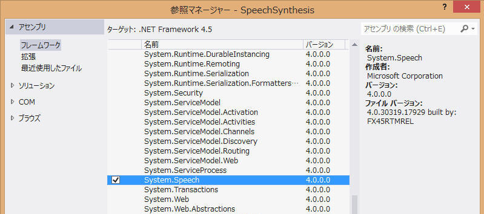
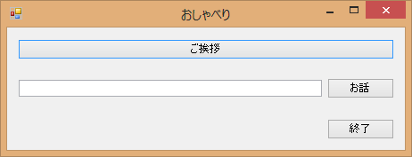

任意の言葉を話せるようになります。日経ソフトウェアの2013年10月号に記載があって試してみました。
記事中では日本語は使えないとなっていましたが、私がVS2012と.NET4.5で試す範囲ではそこそこうまく発音できているように思います。WindowsUpdateなどによりいつの間にか改善されていたのでしょうか？
とりあえず一本テストプログラムを作成してみましょう。
まずはプロジェクトの参照に System.Speech を追加します。
| コンパイラ : | Visual Studio 2019, | Version 16.11.15 |
| Visual Studio 2012, | ||
| .NET Framework, | 4.8 4.5 |
|
| OS : | Windows11 home, | 21H2 |
| Windows8 64bit 日本語版, | ||

画面と使い勝手はこんな感じで。

using に "System.Speech.Synthesis" を追加します。
で、あとは下のようなプログラムを書いて、テキストボックスに書いた内容をしゃべるようにしてみます。
using System;
using System.Collections.Generic;
using System.ComponentModel;
using System.Data;
using System.Drawing;
using System.Linq;
using System.Text;
using System.Windows.Forms;
using System.Speech.Synthesis; // SpeechSynthesizer
namespace SpeechSynthesis
{
public partial class Form1 : Form
{
public Form1()
{
InitializeComponent();
}
private void button1_Click(object sender, EventArgs e)
{
Close();
}
private void button2_Click(object sender, EventArgs e)
{
var synth = new SpeechSynthesizer();
synth.SelectVoiceByHints(VoiceGender.Female);
synth.SpeakAsync(textBox1.Text);
}
private void button3_Click(object sender, EventArgs e)
{
var synth = new SpeechSynthesizer();
synth.SelectVoiceByHints(VoiceGender.Male);
string message = "こんにちは。日本語をしゃべるテストプログラムです。お試しください。";
synth.SpeakAsync(message);
}
private void Form1_FormClosing(object sender, FormClosingEventArgs e)
{
var synth = new SpeechSynthesizer();
synth.SelectVoiceByHints(VoiceGender.Male);
string message = "プログラムを終了してよろしいですか？";
synth.SpeakAsync(message);
if (MessageBox.Show("プログラムを終了してよろしいですか？", "終了確認", MessageBoxButtons.YesNo, MessageBoxIcon.Question, MessageBoxDefaultButton.Button1) == System.Windows.Forms.DialogResult.No)
{
e.Cancel = true;
}
}
}
}
サンプルプログラム ダウンロード
本ページの情報は、特記無い限り下記 MIT ライセンスで提供されます。
|
MIT License Copyright (c) 2013-2022 Kinoshita Hidetoshi Permission is hereby granted, free of charge, to any person obtaining a copy of this software and associated documentation files (the "Software"), to deal in the Software without restriction, including without limitation the rights to use, copy, modify, merge, publish, distribute, sublicense, and/or sell copies of the Software, and to permit persons to whom the Software is furnished to do so, subject to the following conditions: The above copyright notice and this permission notice shall be included in all copies or substantial portions of the Software. THE SOFTWARE IS PROVIDED "AS IS", WITHOUT WARRANTY OF ANY KIND, EXPRESS OR IMPLIED, INCLUDING BUT NOT LIMITED TO THE WARRANTIES OF MERCHANTABILITY, FITNESS FOR A PARTICULAR PURPOSE AND NONINFRINGEMENT. IN NO EVENT SHALL THE AUTHORS OR COPYRIGHT HOLDERS BE LIABLE FOR ANY CLAIM, DAMAGES OR OTHER LIABILITY, WHETHER IN AN ACTION OF CONTRACT, TORT OR OTHERWISE, ARISING FROM, OUT OF OR IN CONNECTION WITH THE SOFTWARE OR THE USE OR OTHER DEALINGS IN THE SOFTWARE. |
| 2022-06-10 | - | ページデザインを更新 |
| 2013-10-05 | - | 新規作成 |